01The idea
CCDC models each band of a pixel as a harmonic: a trend plus the annual and semiannual cycles. It looks for a change when several clear observations in a row depart from the model. Each time the segment grows, CCDC fits the model again on all its observations.
S-CCD (Stochastic Continuous Change Detection, Ye et al. 2021) starts its models in the same way, with 18 clear observations over at least a year. After that, the coefficients become the state of a Kalman filter, and they may drift a little from one observation to the next. Each observation that fits the model updates it once, so the model follows a forest growing or a season shifting without being fitted again. The test of a change is CCDC's:
- Statistic
- An observation's departure from the model's prediction, scaled by each band's RMSE and summed over the five detection bands (green to SWIR2).
- Anomaly
- An observation whose statistic is above the change threshold: 15.09 for five bands at a probability of 0.99.
- Break
- Six anomalies in a row (Consecutive anomalies), departing in the same direction. The break is dated on the first of them, and a new model starts after it.
- Outlier
- A single observation far beyond the threshold (30.9) and not followed by others, such as a cloud the quality band missed. It is left out of the model.
- Change in progress
- At the last date: the latest observations are anomalies, but fewer than six of them. It may become a break with the next images.
- Waiting for a model
- After a break, a pixel needs 18 new clear observations over at least a year before it is monitored again.
02The example
The series of the CCDC guide: 125 Landsat 8 and 9 dates of central Rondônia, February 2020 to August 2026, 1690 × 1675 pixels. Two Landsat paths are interleaved, so each pixel is seen on about 60 of the dates. Clear images come almost only from May to October, about nine a year. Here each date is a GeoTIFF of the six reflectance bands, with the pixels that QA_PIXEL marks as cloud or shadow already set to no data. With the QA_PIXEL band in the files instead, choose it as the Quality band in the Display panel.

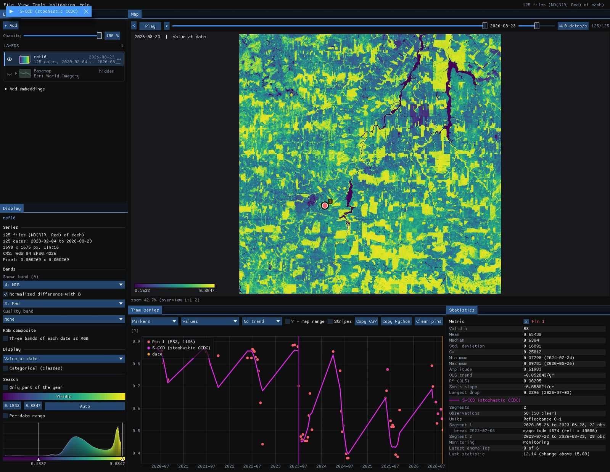
03Opening the tool
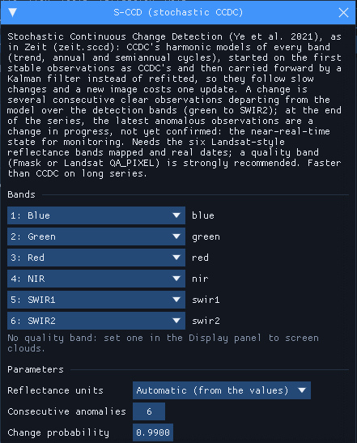
Tools → S-CCD (stochastic CCDC), among the change detection tools. The tool needs real dates and the six Landsat-style reflectance bands. They are mapped from the band names when it can. It comes from Zeit (zeit.sccd) and is built into Janus, so there is nothing to install. The units are found from the values: reflectance 0–1, reflectance × 10,000 or Collection 2 digital numbers.
The window notes that there is no quality band. In this series the clouds are already no data, so nothing is lost. In a series with its QA_PIXEL band, set that band as the quality band.
04A confirmed change
With the tool open, S-CCD runs on every series the chart shows: the cursor, the pins and the ROI. Over each one it draws the filtered model (in the units of the series shown, here NDVI) and a vertical line at each break. The numbers go to the Statistics table.

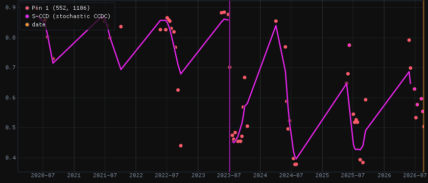

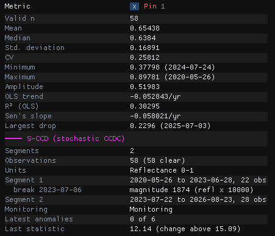
The forest's model runs from 26 May 2020 to 28 June 2023 on 22 observations. On 6 July 2023 the pixel departs from it, and the next observations confirm the change. The magnitude, 1874, is the length of the change over the five detection bands, in reflectance × 10,000: the NIR fell and the SWIR rose. A second model, the pasture, starts with the observation of 22 July and covers the three years since.
At the last date pixel 1 is monitoring with 0 of 6 anomalies. Its last statistic, 12.14, is below the threshold of 15.09. Some of its 2026 observations sit off the model, but anomalies count only in a row up to the last image, and the latest one fits.
05A change in progress
A second pixel, about 11 km to the north-west (pixel 378, 778):

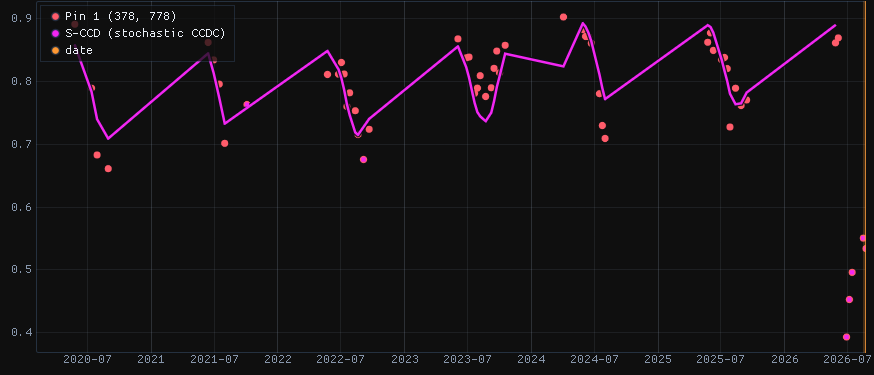

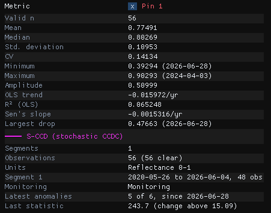
For six years this pixel follows its model, through dry seasons that differ from year to year. Then, from 28 June 2026, its NDVI falls from about 0.8 to 0.5. The NIR drops by a third and the SWIR1 rises, which is what a clearing looks like. Each of the five observations since then is far beyond the threshold: the last statistic is 243.7, sixteen times the threshold of 15.09. S-CCD has not yet confirmed a change, because it needs six anomalies. The pixel is a change in progress: 5 of 6 anomalies, since 28 June. One more image like these would confirm a break dated 28 June.
Batch CCDC on the same data has no such state. At the end of a series it either dates a break of the last segment from the partial change, or leaves the pixel in its model.
Check a few pins first
Drop pins on places you know, such as a clearing, a forest left alone and a pasture. Read their charts before running the image. Look for outliers that are clouds the quality band missed: in this stack, the image of 12 February 2023 has clouds left in it. Where a real change follows such an outlier, the break can be dated on the cloud.
06The parameters
| Parameter | Default | What it does |
|---|---|---|
| Reflectance units | auto | The units of the six bands. S-CCD's valid range and magnitudes are in reflectance × 10,000. Automatic reads them from the values; the files' scale and offset are applied first. |
| Consecutive anomalies | 6 | Anomalies in a row that make a change. Fewer means earlier breaks and more false ones. It also sets how long a change stays "in progress". It counts clear observations, so in this series six of them are six weeks in the dry season but can span a whole rainy season. |
| Change probability | 0.99 | The chi-square probability of the change threshold over the five detection bands (15.09). A lower value is more sensitive. |
| Outlier probability | 0.99999 | Above this threshold (30.9), a single observation is an outlier, left out of the model. |
| Max angle (degrees) | 30 | The largest mean angle between the anomalies' departures and their median one. A change departs in one direction and noise does not, so a wider angle accepts more as change. |
| Max segments | 6 | Segments kept per pixel. |
07Running it on the image
Under Run on the raster, choose the Whole image, the Visible area or the ROI, then Run. The run happens in the background on every core, and the map stays usable meanwhile. This guide runs it on a 16 × 16 km ROI around both pins:
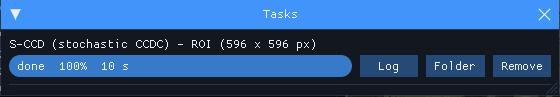
The outputs are GeoTIFFs, saved by default in %LOCALAPPDATA%\Janus\results next to the run's job.json and job.log. They open over the map and are listed under the series in the Layers panel, and the first one, the number of breaks, is shown. The maps below are drawn over the Esri imagery, with the series dimmed to 25%.
08The maps
| Map | Meaning |
|---|---|
| Breaks | The number of confirmed breaks. |
| First / last / largest break date | The date of the first, the last and the largest break, as a decimal year. |
| Largest break magnitude | The length of the largest break over the five detection bands, in reflectance × 10,000. |
| Monitoring state (last date) | A class map: stable (monitoring, with no anomaly among the latest observations), change in progress (one or more), waiting for a model after a change, or no model (never enough clear observations). |
| Latest anomalies | How many of the latest observations in a row are anomalies, up to Consecutive anomalies. |
| Anomalies since | The date of the first of them. |

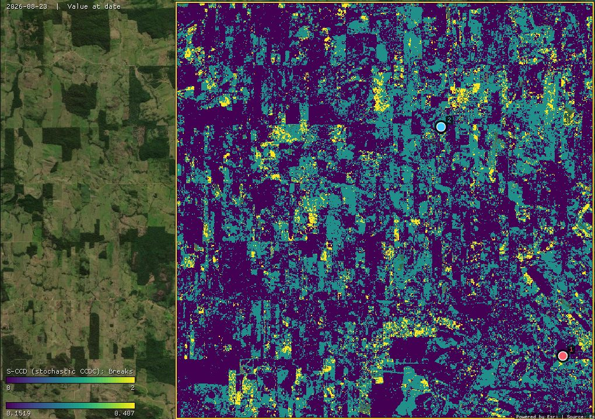

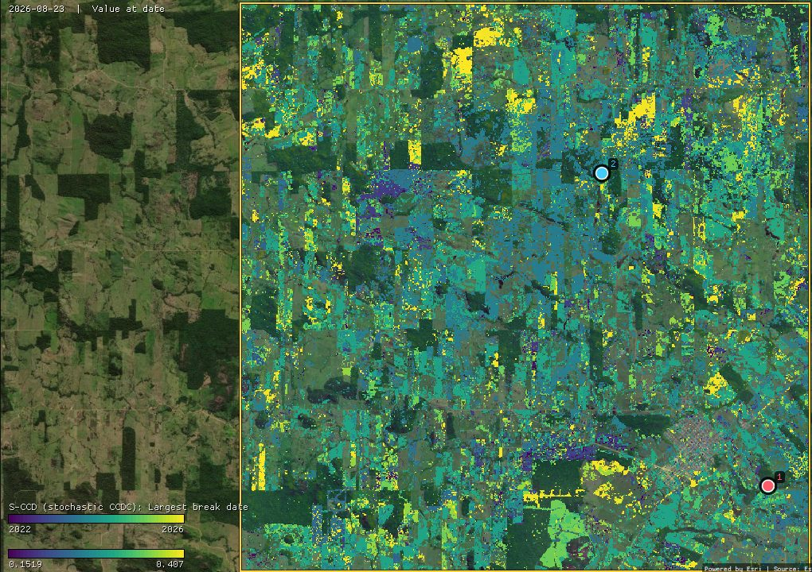
41% of the pixels have at least one break: 36.5% one and 4.5% two. Most of the largest breaks are in 2023 (50,347 pixels) and 2024 (50,055). The breaks follow field edges, but many fall on a few dates: 23 August and 8 September 2023 each hold a few percent of the pixels. That looks like the drought and fires of 2023 on the pastures more than like new clearings. S-CCD reports any lasting departure from a pixel's own seasons, not only a change of land cover. The magnitude map and the charts tell them apart.

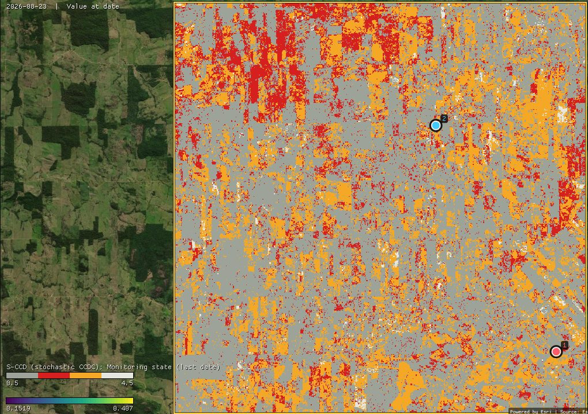
On the last date, 58.1% of the ROI is stable, 13.4% has a change in progress, 27.3% is waiting for a model after a change, and 1.2% has no model.
- Waiting is long with dry-season data. A new model needs 18 clear observations over at least a year. With nine a year, that means two dry seasons, so every pixel that broke in 2025 or 2026 is still orange. Until it has a model again, such a pixel cannot signal a new change.
- Not every red pixel is a clearing. A change in progress starts with a single anomaly. The two maps below say how far along it is and since when.

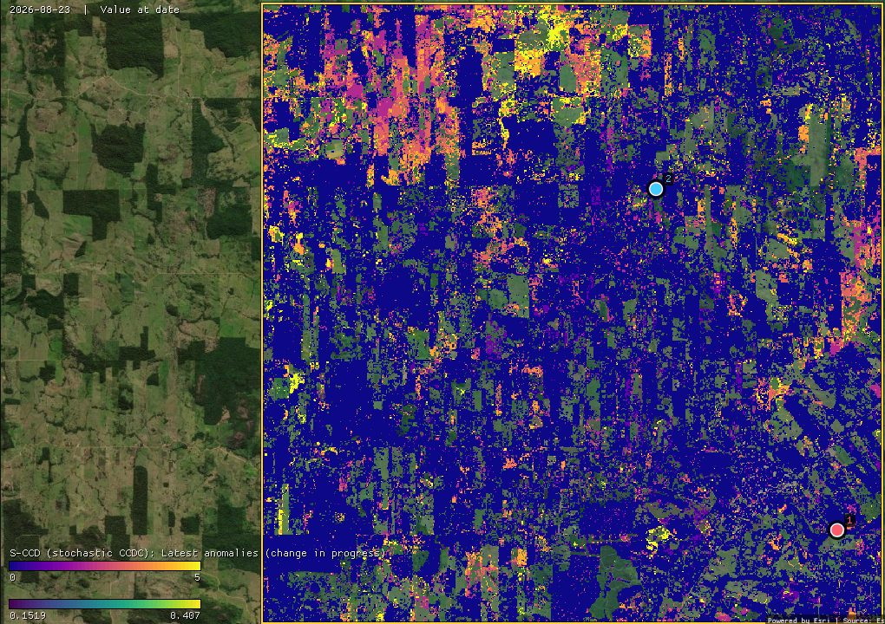

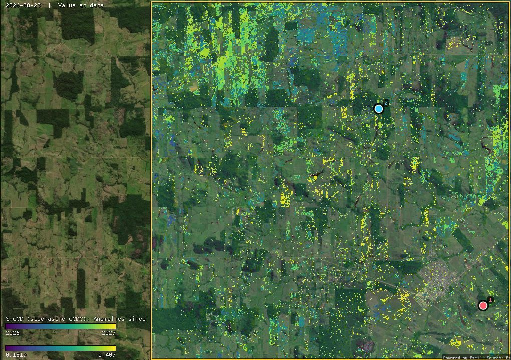
29,058 pixels (8.2%) have three or more anomalies. Their first anomalies cluster on a few dates: 14 July (12,654 pixels) and 7 August 2026 (9,761). When so many start on the same day, the whole landscape is departing at once: pastures drying faster than in the years their models learned, or smoke from the season's fires. A clearing such as the second pin's stands out by its size: five anomalies far beyond the threshold, with the NIR down and the SWIR up. Read the state with its anomalies and its chart, or wait for the next images.
The other maps are layers under the series in the Layers panel. Show one with its eye, or hover the map: the chart keeps the pixel's series and its S-CCD model, so every colour can be checked against the chart behind it.
09S-CCD or CCDC
Both tools take the same series and the same bands, and their models start in the same way. The differences:
- The model. CCDC's model is the best fit of a whole segment. S-CCD's is a running estimate that gives more weight to recent observations, so it often absorbs a dry season unlike the others rather than opening a new segment. On this ROI, 41% of the pixels have an S-CCD break, against 54% with CCDC (both run in Zeit, on the same pixels).
- The end of the series. CCDC dates a change that is not yet complete at the last date as a break. S-CCD reports it as a change in progress, with its anomalies and their start, and dates a break only once it is confirmed.
- Speed. On this series of about 60 dates the two are close: in Zeit, 14 s for these pixels against 20 s for CCDC, because starting each model takes the same work in both. On long, dense series, S-CCD is about ten times faster than CCDC: each new image costs one update per pixel.
- A cloud-free image of any date, and classifying the segments, are in the CCDC tool.
The algorithm was written in Zeit from the paper. The authors' package, pyxccd, served only as a black box to compare against. On 4096 pixels of this stack, 85% of the pixels have as many breaks in both, and three quarters of pyxccd's breaks are within one observation of Zeit's. The magnitudes of the breaks both find correlate at 0.99. Zeit finds about 20% more breaks, all of them near the threshold. pyxccd takes 10.1 s on those pixels, and Zeit 1.1 s on one thread.
10What next
- Other ways to read every date: CCDC for the whole history and its synthetic images, EWMACD for control charts on one index, and CODED to tell degradation from deforestation with the NDFI.
- Compare it. Tools → Agreement of change maps takes several maps of dates (S-CCD's largest break date, CCDC, LandTrendr) and maps where and when they agree.
- Validate it. The break dates make a map of events. The Validation guide shows how to sample it and estimate its accuracy and areas.
- Script it. The same algorithm is
zeit.sccdin Python; Zeit's S-CCD tutorial follows the same pixels.
11References
- Ye, S., Rogan, J., Zhu, Z., Eastman, J. R. (2021). A near-real-time approach for monitoring forest disturbance using Landsat time series: stochastic continuous change detection. Remote Sensing of Environment, 252, 112167.
- Zhu, Z., Woodcock, C. E. (2014). Continuous change detection and classification of land cover using all available Landsat data. Remote Sensing of Environment, 144, 152–171.
- Zhu, Z., Zhang, J., Yang, Z., Aljaddani, A. H., Cohen, W. B., Qiu, S., Zhou, C. (2020). Continuous monitoring of land disturbance based on Landsat time series. Remote Sensing of Environment, 238, 111116.
- Zeit: the change detection library behind the tools of Janus.